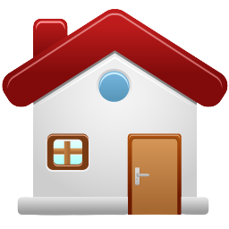

Sobre:
Tenho na tranquilidade uma das minhas características chave de personalidade, o que serve de grande benefício na resolução de problemas complexos de forma objetiva. Sou entusiasta na utilização de cursos, bootcamps e projetos pessoais na busca por mais conhecimento. Perseguindo no momento aprimoração nas áreas de desenvolvimento Fullstack e Mobile.
Links e Contato:

gug994@gmail.com

/gustavo-silva-824673143
/gugacosta99
+55 (81) 9 9646-6858

+55 (81) 3341-4551
Visite meu portfolio:
github.com/gugacosta99/Portfolio
Endereço:
⋄ CEP: 51030-030
⋄ Rua Professor Augusto
Lins e Silva, 228, Apto 1302
⋄ Recife - PE - Brasil